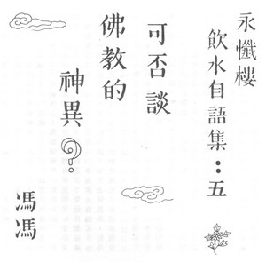

可否谈佛教的神异？
冯冯
中国有一句很有名的谚语──寓言“井蛙观天”。据说有一只出生在井内，长大在井内的青蛙，从未离开过那口井。它的世界只有那口井内的那么一点点大，周围不过数尺。四面都是高高的井壁。它向上望，可以看到的天空，也不过只有井口那么大。它想。天也不过就那么一点点罢了；天空上面是空洞的，甚么也没有。
佛教哲理之广大，佛法无边，我们穷一生之功，亦难以窥见其全貌。佛法有无限不可思议的境界和超自然力量。越是接近佛法，越能渐渐体会得到佛法的超自然巨大能力。不肯接受佛法，就好像是井中之蛙；自锢于数尺周围之井内．看不到天空的真相。
有好些人，自以为巳经头脑很科学，开口就说：“这是二十世纪科学昌明的时代。”他们只见到周围物质的现象，他们所知的只是现阶段的物理科学，就以为已经能够解释宇宙一切的现象了。他们于是否定一切超自然的现象。他们说没有鬼，没有神，没有佛。没有神通，没有佛法佛力。他们斥信佛为迷信，他们把一切他们不了解亦未下功夫研究的超自然现象斥为迷信；有些则视为心理现象；有些说是自我欺骗的观念。
他们以为：现代的科学巳经很发达了，已经可以窥知宇宙的奥秘了。殊不知现代科学实在仍然不过只是在萌芽的阶段。每一天都有科学新发现；推翻了不少已知的所谓科学观念。新科学越深入研究宇宙，越发现到宇宙仍有更多未能以现阶段科学知识解释的奥秘──包括一般人不肯接受的多度空间和精神世界。最新的尖端科学，逐步证明了这些的存在，也逐渐增加对之探讨研究。这一类的研究，是越来越认真，越来越蓬勃，成为当前最新的科学研究方向。
佛经佛典在几千年前就巳经揭示的多度宇宙观念与外太空生命，都是超出地球之外的，甚至超出这一个宇宙的，其实是先知的科学观念。这些话题，四年来我巳经在著名的香港佛刊内明杂志连续发表了多篇随笔，在本刊则是初次提及。我希望将来也能在本刊发表这一类探讨小文。我不揣浅薄妄谈，盼望抛砖引玉，有更多的人用新科学观念来证明佛教是超时代科学化的，而并非迷信。
我在内明杂志发表的随笔，有好多篇曾经提及发生在金山寺与万佛城的超自然力量现象。都是根据我亲身经历的真实情形报告的。这些报告，固然引起不少佛友的兴趣，纷纷函询，也引起一部份人士的怀疑，甚至有些大德来示，戒我不可多谈神异。有些大德训示指出我在金山寺万佛城所见神异均是妄相，而不是佛力；另外有些大德则指示谓：信佛不可谈异。
所有各种的开示，我都非常感激遵教。但是我有一点浅陋的愚见──我想：固然金刚经有云“有相皆妄”，但是我猜其义并非叫我们空到绝对真空，否定一切，做绝对的否定。我个人愚解，认为该说是教我勿执迷于相而巳。若是果然都妄，然则一切佛典又何必提及释迦如来的许多超自然大能力之法相？索性给我们一本无字之经，不就了了？像西游记结尾说的，唐三藏玄奘法师和行者八戒取回的都是无字之经。不就不但符合“不立文字”之义，也就更空更无相了吗？
我想我们不必那么执着于色空。如果太执着于字义，岂非也不空了？
佛典整理佛语成集。为什么明知色空相妄，仍要插入佛陀神异之诸相，大放光明，照彻三界什么的？我猜想，因为一则那是事实，二则是为了便于开示教化，增人信心。
宗教若全然不提超自然能力，只谈哲理，那岂非就仅是哲学是非宗教了？哲学思想是宗教的一支骨干，而超自然能力现象是宗教的另一支重要骨干，两者均不可缺。愚见认为，提及佛教的神异事实，应是无悖于佛教的。神异也者，不过是从我们太有限的科学现阶段知识与在地球的习惯观念来衡量。假如从宇宙科学观念来看，就会知道，神异不过是宇宙物理的真实现象，并非什么迷信。 我们固然不必老挂在口边，但作为佐扶宏扬佛法，亦不必畏缩而不敢提及的。
只提神异，而不及佛理，那是不适当的。只提佛家哲学，而讳避佛教的许多超自然能力现象，我认为也是一种极端的执着执迷。佛徒实无须畏惧人言而致不敢提及真实的神异。佛教的神异超自然现象，是合乎宇宙法则的。当然，假如我们自己要跳到井中去观天，那又另作别论。
其实，“什么都不信”，不也就是另一面的“迷信”吗？视一切相都是魔，不也是执着吗？
我所以斗胆，未经金山寺万佛城宣化长老和各位师兄的同意，就擅自报导我见闻的神异，也就是我认为我应该让人知道佛教的一小部份超自然能力现象。而我同时又深信，这些神异事迹，都是因佛法教化所生的。
佛法的神异，处处均有，并非只有存在于金山寺万佛城；只是因为我与金山特别有缘，亦很少接近其他丛林；故此我谈的，也只限于金山寺为多，另外旁及日本与他处的经历较少。我并非说，只有金山寺才有神异。我相信，佛法的神异事迹；是在任何地方都会发生的。
我又想到，我们既然可以谈达摩祖师、憨山和尚、六祖、虚云和尚──等等先贤的神异事迹，为什么我们就不能提及当代法师当前发生的佛教超自然事迹呢？
假如实情实报，不增不减，能有助人们增进对佛法的认识。我想，谈超自然神异事迹，是一种宗教教化的必要。信徒也有权利去追求对于佛法超自然现象的深入认识。我们避讳不言，反而无异于堵塞智识之重要一源。
原载万佛城《金刚菩提海》第125期：1980年10月1日
转贴来源：万佛城《金刚菩提海》